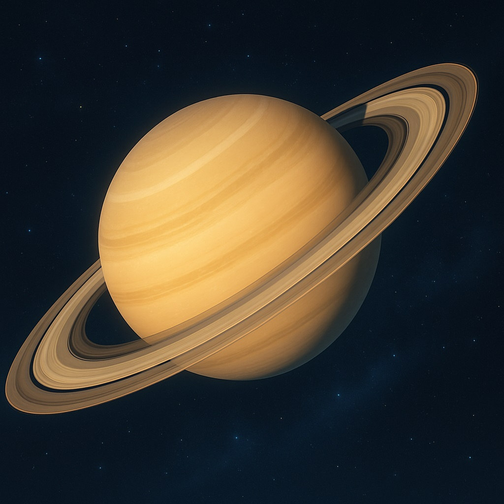
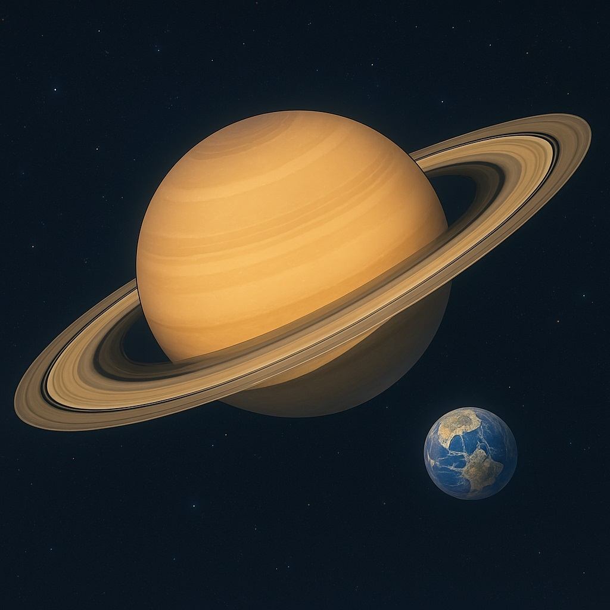
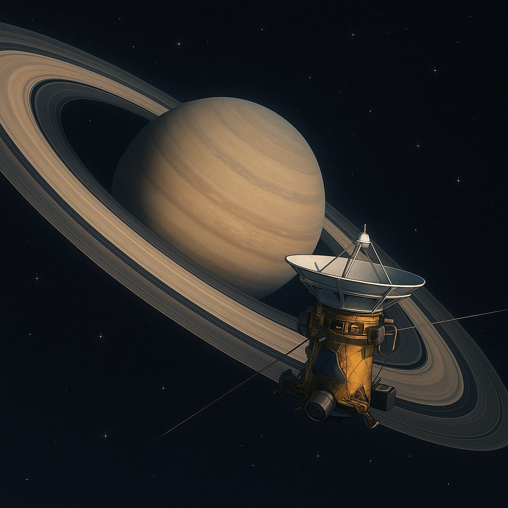
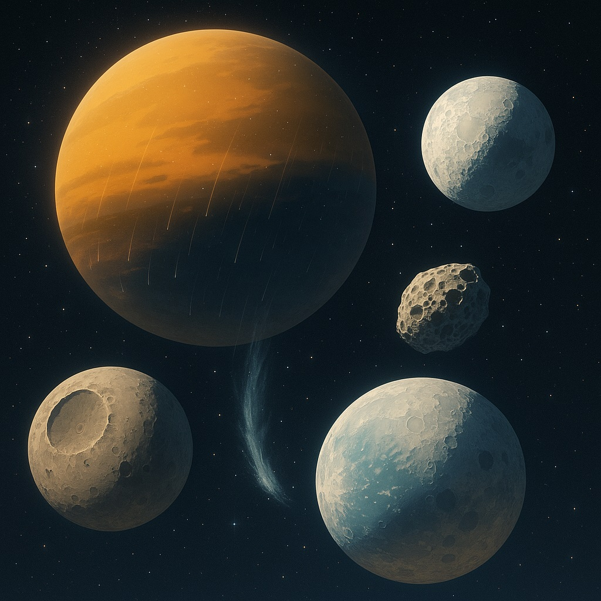

🪐セーラー・サターンと学ぶ、土星のものがたり
〜環の詩を奏でる護りの女神〜

土星の美しい環は、まるで護りのヴェールみたい！
ねえ、エミリー
今日は「**セーラー・サターン**」の神秘と重なり合う、**土星（Saturn）**の世界へようこそ。
幾重にも広がるリングは、まるで護りのヴェール——セーラー・サターンの静かな力強さを想わせるよね。
🌟 土星の基本的な特徴
土星は太陽系で2番目に大きなガス惑星だよ。
- 優美なるガス惑星：赤道半径は地球の約9.4倍、質量は95倍ほど。主成分は水素とヘリウム、軽やかな雲に包まれた巨星だよ。
- 高速な自転：約10時間40分で自らを一周。遠心力で赤道がぽっこり膨らみ、極はきゅっと締まった形になるんだ。
- 水より軽い星：密度はわずか0.69g/cm³で、水に浮かぶほどスカスカ。内部ではヘリウムが沈み込む際に熱を放っていると考えられているよ。
セーラー・サターン：「静寂の鎖よ、解き放て…！」
サターンは破壊と再生の力を秘める戦士。土星のリングもまた、儚くも美しい物語を紡いでいるんだね。
サターンは破壊と再生の力を秘める戦士。土星のリングもまた、儚くも美しい物語を紡いでいるんだね。
💍 壮麗なリングの秘密

土星の環は、無数の氷と岩の粒でできているんだ。
- 無数に散らばる氷と岩：リングは細かい氷や塵が集まった構造で、A～Gの7大リングとカッシーニの間隙など、さまざまな帯が重なる。
- 極薄のヴェール：直径は約27万kmに広がるが、厚さはわずか10m～100m。光を受けてキラキラ瞬く姿はまるで夜空の宝石箱だよ。
- 永遠の儚さ：リングは衛星の潮汐力により維持されているけど、数千万年後には土星に降り注ぎ、やがて溶け込む運命をたどるとされているんだ。
🚀 カッシーニがもたらした発見
「カッシーニ」探査機が土星の多くの秘密を教えてくれたよ。
探査機「**カッシーニ**」は2004年に到着し、13年間にわたり土星本体、リング、衛星の詳細を観測。見事なリングの構造から、巨大なタイタン着陸計画の大成功まで、数々の驚きを届けてくれたよ。
タイタンへの「**ホイヘンス・プローブ**」着陸では、窒素大気とメタン雨の世界を初めて間近に観察。生命への手がかりも探ったんだ。
🪐 個性豊かな衛星たち
土星の周りには、それぞれに個性的な衛星がたくさん！
- タイタン：太陽系最大級の衛星。厚い窒素大気とメタンの海をもち、“メタンの雨”が降る風景は、まるで異世界の地球みたい！
- エンケラドス：南極付近から氷の噴出を繰り返し、地下海の存在を示唆。小さくとも、生命の可能性を秘めた宝石のよう。
- ミマス：大きなクレーター“ハーシェル”をもち、まるで死を司るサターンの鎌を思わせる鋭い姿。
- ヒペリオン：不規則な形とスポンジのような表面模様で、風雨にさらされた古の城壁のような趣があるよ。
✨ 輪舞の世界へ
土星は、美しさと儚さ、そして再生の物語を宿した星。セーラー・サターンの鎖のように、リングは守りと変化を象徴しているんだ。
次は、不思議な氷の世界「**セーラー・ウラヌス**」のウラヌス、そして深遠なる暗黒「**セーラー・ネプチューン**」のネプチューンへ、一緒に旅を続けよう！
今日の宇宙の神秘 - Astronomy Picture of the Day
コンテンツを読み込み中...